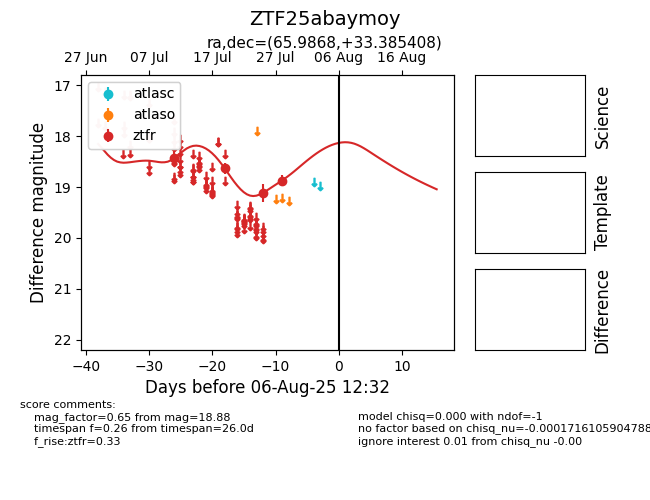

Target ZTF25abaymoy at 2025-08-06 17:07, see:
FINK: fink-portal.org/ZTF25abaymoy
Lasair: lasair-ztf.lsst.ac.uk/objects/ZTF25abaymoy
ALeRCE: alerce.online/object/ZTF25abaymoy
alt names
ZTF25abaymoy (ztf,fink)
coordinates:
equatorial (ra, dec) = (65.9868,+33.38541)
galactic (l, b) = (165.8568,-11.24433)
photometry
last ztfr=18.88
4 ztfr detections
